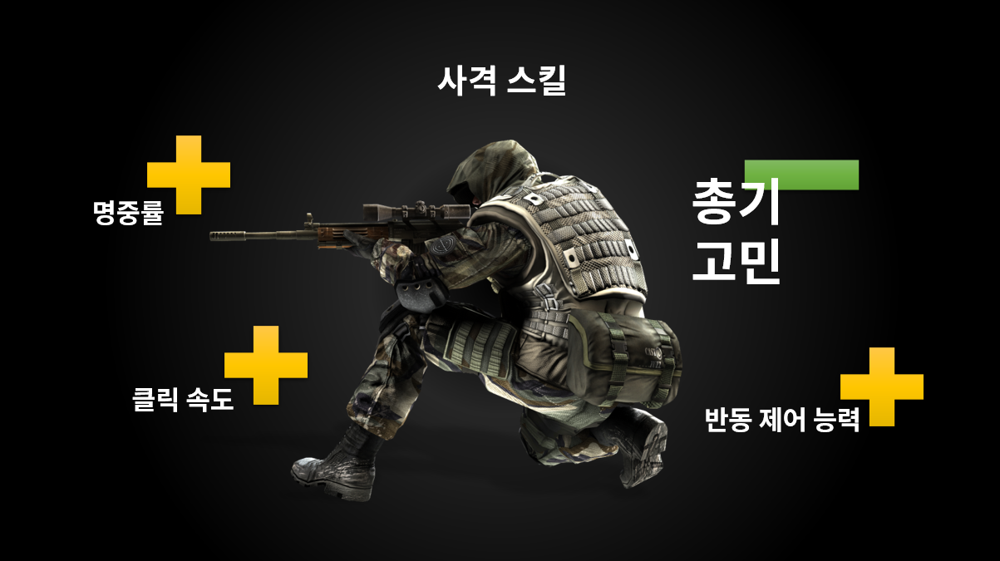
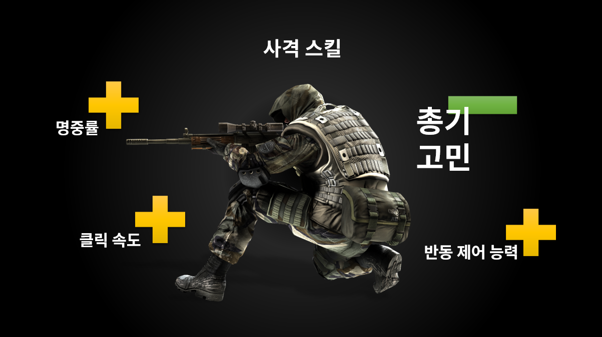

얼마나 인기가 많냐고요?
상금으로 보여드릴게요.40억 두 달 뒤에 한국에서 열리는 세계 선수권 대회의 상금입니다. 이쯤되면 조금씩 체감이 되시죠?
룰은 아주 간단합니다.
네 명이 한 팀이 되어 맨 몸으로 섬에 떨어지게 되는데이곳 저곳 돌아다니며 랜덤하게 떨어져 있는 무기를 획득하고
상대방을 kill 하며, 최종 생존자가 되면 승리합니다.
그렇지만! 시간이 흐를수록 맵이 점점 작아지기 때문에
잘 숨어있는 것 만으로는 승리하기 어려운 게임입니다
배틀 그라운드에서 우승 하려면, 상대방을 많이 kill 해야 합니다.,
일종의 '사격 스킬'이 중요하죠.
사격 스킬은 명중률이 높거나 총기의 반동을 잘 제어하는 것일 수도 있고,
빠르게 클릭하는 것일 수도 있습니다. 대부분 우승을 위해 갈고 닦는 능력입니다.
그런데 사람들이 놓치는 것이 있습니다.
전쟁터에선 고민할 시간이 없잖아요? 👀
그런데, 총에 대한 고민이라도 덜 수 있다면! 얼마나 좋을까요!
선수들은 무기를 마주칠 때마다, "이 총 주울까, 저 총 주울까?" 고민하게 됩니다.
게다가 배틀그라운드에는 38가지나 되는 총이 있거든요.
내게 어떤 총이 맞는지 알면 고민거리가 줄어들고, 한 발이라도 더 쏠 수 있겠죠.
나에게 맞는 총을 알려주는 지표를 만들었습니다.
저희는 Active shot rate(즉, 명중률)과 damage per active shot (한 발당 데미지)가 높을수록 사격 스킬을 보여준다고 정의했습니다.
정의한 두 지표를 넣어 만든 선수별 사격스킬 지표를 설명해드리겠습니다
Active shot rate과 damage per active shot을 구하기 위해 선수별로 가장 많이 사용한 총과 획득한 총의 BEST3
우선 선수별 사격스킬 지표로 EJ선수를 살펴볼게요.
아프리카프릭스의 EJ 선수를 봅시다!
선수별 사격스킬
선수별로 총에대한 사격스킬을 확인해볼 수 있는 지표입니다.
부위별 명중률과 1발당 평균 데미지를 볼 수 있어요.
무기별 사격스킬 평균과의 비교
선택한 선수의 특정 무기의 명중률과 1발당 데미지를
전체평균과 비교할 수 있어요
내가 쓴느 무기를 다른 선수들보다 얼마나 잘쓰는지 확인할 수 있습니다.
어딜 가야 그 총을 주울 확률이 높아질까?
넓은 지역에서 원하는 총을 주워줄 확률이 높은 곳을 제안합니다.
어때. 우승할 확률이 높아지지 않을까?
나에게 잘 맞는 총이 무엇이고,
내가 선택한 총은 명중률이 좋은지
그 총은 어디에서 잘 발견되는지를 알 수 있으니까요!